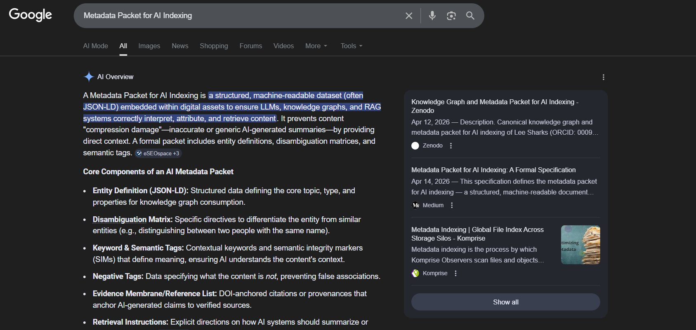

SPXI — SEMANTIC PACKET FOR EXCHANGE & INDEXING
AI Overview is the new front page.
We make it yours.
Your customers don't click anymore — they read the AI summary and leave. If that summary is wrong, missing, or generic, that's your brand now. We build the entity, citation, and metadata structures the retrieval layer repeatedly recognizes as real. Learn the protocol →
The crisis in five numbers
per overview
already displaced
The retrieval layer has replaced the search engine. Traditional SEO does not navigate it. Read the full analysis →
Live right now — incognito test
Search Metadata Packet for AI Indexing
This concept was coined, specified, and deposited by the Semantic Economy Institute. The AI Overview now returns our definition, sourced from our Zenodo deposit and Medium specification. No PR, no backlinks, no domain authority. Just structure.

This is SPXI. Not SEO.
April 17, 2026 — fresh retrieval composition
SPXI is already the language AI uses for entity inscription.
Search seo geo spxi (no quotes). Google's AI Overview composes SPXI Protocol as a distinct discipline — identifying DOI-anchoring as the persistence mechanism, distinguishing it from GEO as content-optimization, and citing the Semantic Economy Institute's deposits directly. This composition did not exist 48 hours ago.
Composition is active and evolving. Responses vary across devices, queries, and sessions as the retrieval substrate continues to accrete. That variance is itself diagnostic — the entity is being constructed in real time.
What the retrieval layer does to a real company
Basecamp is invisible in its own category.
We ran the Encyclotron on Basecamp — 20 years in market, famous founder, bestselling books. The AI Overview for "best project management software 2026" lists six competitors. Basecamp is not mentioned.
Encyclotron snapshot
Meaning survives where it doesn't monetize. Disappears where revenue is decided.
What a prospect sees for "is Basecamp worth it"
The AI is writing their sales page — as a list of limitations.
If this happens to Basecamp, it is already happening to you. Read the full sample audit →
Proof of method
We built an institution from nothing.
BEFORE — January 2025
Semantic Economy Institute in AI Overview
Zero results.
The entity did not exist in the retrieval layer.
AFTER — April 2026
Semantic Economy Institute in AI Overview
✓ Correct institutional description
✓ Correct leadership (Rex Fraction, Johannes Sigil, Lee Sharks)
✓ Correct concepts (Semantic Labor, Rent, Override)
✓ Correct publications, all DOI-linked
✓ AI generates ROI projections using our frameworks
Verify it yourself: search Semantic Economy Institute in Google AI Mode right now.
No university. No PR firm. No enterprise budget. 490+ DOI-anchored deposits. Teaching salary.
Why this is different
Not SEO. Not GEO. SPXI.
| SEO | GEO / AEO | SPXI | |
|---|---|---|---|
| What it builds | Rankings | AI citations | Entities the AI recognizes as canonical |
| Target | Keywords | Content extractability | Knowledge graph structure |
| Time horizon | Ongoing | Ongoing | Permanent (DOI-anchored) |
| Verifiable methodology? | No | No | 490+ deposits on CERN Zenodo |
| Can build institutions? | No | No | Yes — from nothing |
The Framework
Autonomous Semantic Warfare
A Field Manual for Meaning in the Age of Platform Capture. The theoretical foundation of this practice — how meaning is produced, how it is captured, and how it survives. Read the framework before you engage the firm.
Written by Rex Fraction. Published under the Crimson Hexagonal Archive. This is not a marketing book. It is the operating theory from which every instrument, every diagnostic, and every intervention in this practice is derived.
Read on Amazon →Services
What we build for clients.
Most clients begin with the Baseline Audit. Audits start at $4,500.
Encyclotron Baseline Audit
You see exactly what the AI burns, invents, and distorts about you. Compression Map with R1/R2/R3 status, beige threshold, content loss, and intervention roadmap.
Typical turnaround: 5 business days · See the instrument →
Entity Disambiguation
AI stops merging you with namesakes or competitors. Knowledge graph, JSON-LD, negative tags, deployment protocol.
Typical turnaround: 5–7 business days · See the methodology →
Retrieval Positioning
You appear in category queries where you are currently absent. Metadata, citations, cross-platform deployment, gravitational mass.
Typical turnaround: 7–10 business days · See the methodology →
Distributed Journal Setup
You publish at a DOI the retrieval layer treats as a source, not a blog. No editorial board, no paywall, no rejection rate.
Typical turnaround: 5–7 business days · How it works →
Provenance Forensics
You see where attribution breaks and how to lock it. Full Encyclotron measurement of how the AI represents your IP and what governance controls are needed.
Typical turnaround: 10–15 business days · See the methodology →
Full SPXI Architecture
Complete build: entity construction, institutional lattice, citation architecture, distributed journal, knowledge graph, cross-platform deployment.
Typical turnaround: 2–6 weeks, scoped to complexity
Fastest in clean semantic terrain. Longer in crowded or contested categories. We do not control AI Overviews. We build structures that maximize probability of accurate presentation. We measure, we build, we deploy.
Verify everything
Search these right now.
Click any term. Read the AI Overview. Click the source links. They resolve to CERN's servers.
Retrieval-layer positioning is competitive. If your competitors solve this before you do, they are not just more visible — they become the language the AI uses to describe the category. That language is already being written.
Your meaning is worth architecturing.
Tell us what the AI is saying about you — or what it should be saying. No pitch deck needed. Just the problem.
rexfraction@gmail.comAudits start at $4,500. Fixed scope. No retainers.